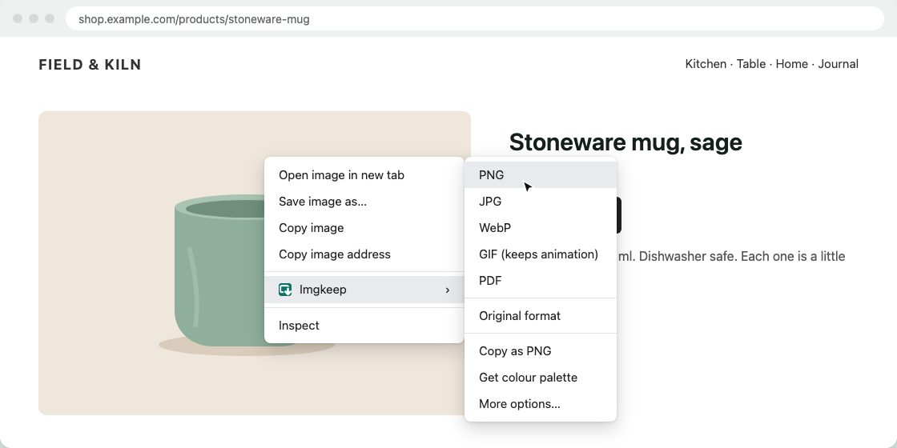

How to save full-size images from Google Images
Short answer
The pictures in the Google Images grid are small copies Google makes, a few hundred pixels wide, so saving one gets you a thumbnail. Click the image first: the preview loads the full image from the website it comes from, and that one you can save. For the best copy, and to see whether you may reuse it, click Visit and save it from the source page.
Updated
How Google Images works was checked on , on google.com in Chrome. Google changes its layout often; if something here looks different, tell us at helloimgkeep@gmail.com.
Why is the image I save from Google so small?
Each picture in the results grid is a thumbnail Google makes and stores itself, at addresses starting with encrypted-tbn0.gstatic.com. They're a few hundred pixels across. Right-click works on them, so Save image as appears, but what it saves is that thumbnail.
When you click a result, Google opens a preview and loads the image from the website that published it. For a moment you see the blurry thumbnail; once the sharp version appears, that's the full image.
How do I save the full-size image without an extension?
- Click the image in the results to open the preview, and wait until it's sharp.
- Right-click the large image and choose Save image as. If you save it while it's still blurry, you get the thumbnail.
- Better still, click Visit to open the page it comes from, and save it there. You'll see who made it and whether it can be reused.
To find images you're allowed to reuse, use Tools → Usage rights → Creative Commons licences on the Images tab, then check the licence on the source page. Many sites serve WebP or AVIF: see WebP to JPG or PNG and AVIF to JPG or PNG.
How do I save it with Imgkeep?
Imgkeep is a browser extension that saves images as PNG, JPG, WebP, GIF or PDF from the right-click menu. We make it. It isn't affiliated with or endorsed by Google Images.
- Click the result, wait for the sharp image, then right-click it and choose Imgkeep → JPG or PNG. A WebP or AVIF image from the source site is converted as it saves, so you get a file any app opens.
- To paste it into a document or a design tool instead, choose Copy as PNG.
- Or point at the large image and press Alt+S (Option+S on a Mac, Alt+Shift+S in Firefox) to save it in the format you used last.
Imgkeep saves the image the page shows, so the preview has to finish loading first. Find image here isn't needed on Google: the right-click already reaches the image.

Our extension
Imgkeep
Save the image you right-click as PNG, JPG, WebP, GIF (animation kept) or PDF, or copy it as PNG. Choose the folder and file names, and find images that sites cover. Converted on your computer: no uploads, no account.
Add Imgkeep to Chrome — free Also for Edge and Firefox. Alt+S needs version 0.15 or later.Can I use the images I save?
Saving an image to look at later, for a mood board or your own reference, is different from reusing it. Images belong to the people who made them, and Google's terms apply to what's posted there. Before you post, print or sell an image, ask its creator and credit them. Only save what you can already see; Imgkeep doesn't get past sign-ins, private accounts or paywalls, and isn't meant to.
Saving from other sites
- How to save images from Pinterest
- How to save images from Instagram
- How to save images from X (Twitter)
- How to save images from Reddit
- How to save images from Facebook
Related guides
- When right-click won't save an image
- How to save WebP as JPG or PNG
- How to save AVIF as JPG or PNG
- How to save an animated WebP as a GIF
- How to get an image from the web into Canva, Figma or Google Slides
Questions
Why does Google Images save a small, blurry picture?
You saved the thumbnail from the results grid. Click the image, wait for the sharp version in the preview, and save that, or save it from the source page.
Can I use images I find on Google?
Not just because Google shows them. Each belongs to whoever made it. Use the Usage rights filter for Creative Commons images and check the licence on the source page.
Why does a Google image save as WebP?
The image comes from the website that published it, and many sites send WebP. Save it as JPG or PNG with a converter, or see how to save WebP as JPG or PNG.